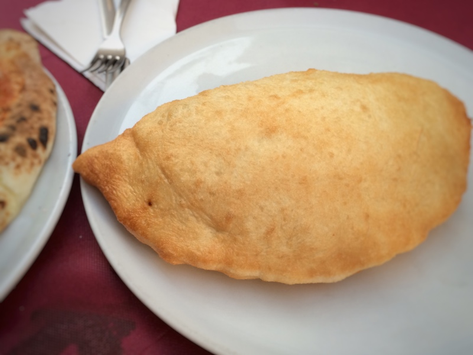

Photo by Francesca Tosolini
Il calzone is one of the most popular pizzas in Italy, even though it doesn't really look like one. In fact, it is a folded pizza that is usually filled with tomato sauce, ricotta cheese, baked ham, and mozzarella.
{This is an excerpt from chapter 3 “Italian cuisine and food establishments” of the eBook “Italy from the Inside. A native Italian reveals the secrets of traveling in Italy”}